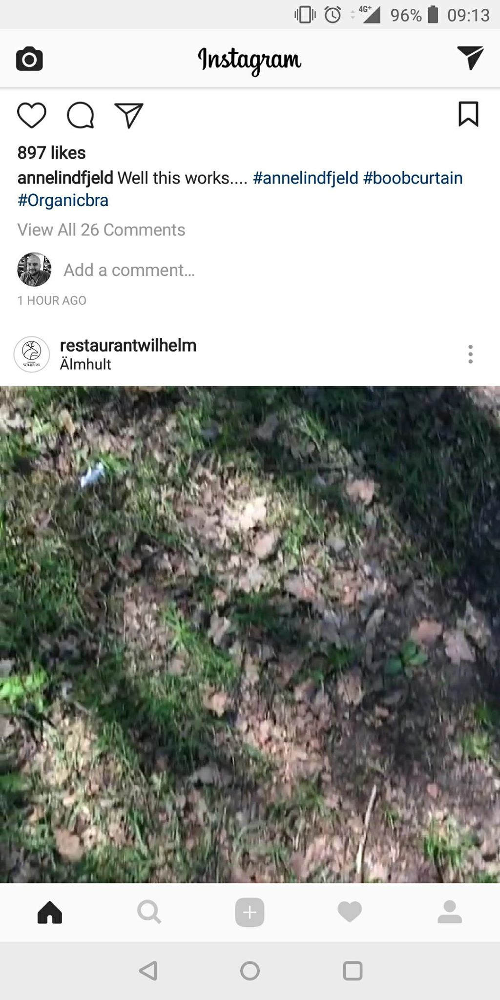
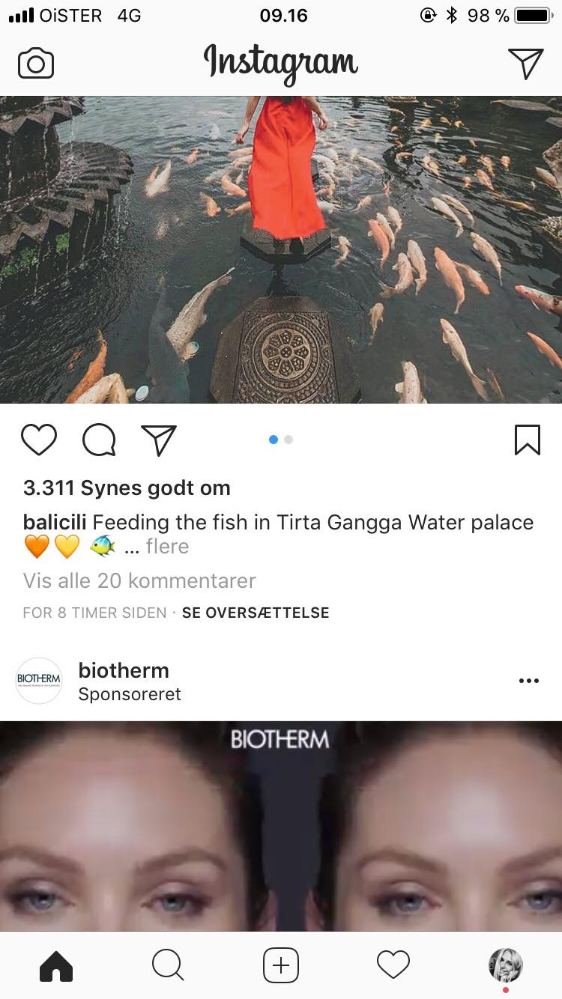

Touch design øvelse
Phone features
- Push beskeder
- Offline mode- kan bruges offline men kun med allerede opdateret indhold
- Termometer
- Bevægelsessensor
- Kamera/lydoptagelse
- Vibrering
- Kontakter
- Real time communication
- push - beskeder
- Permission
- payment
Hvordan er brugssituationen for instagram typisk?
Instagram bruges typisk som en blanding af udforsk/spil, check in/status og rediger og opret. Instagram bruges som facebook som en slags underholdning når man sidder i venteværelset eller i bussen, men også som check ind og status hvor vi følger med i andres liv og hverdag, eller når man skal opdatere verden i noget spændende men selv har lavet, men også som rediger og opret da man kan kommunikere og sende opslag til andre. Instagram leger med vore nysgerighed og bliver hurtigt en app man bliver afhængig af som resultere i at man bruger den alle tidspunkter på dagen.
designforskelle Android / iphone
 Designet er ret forskelligt, androids er meget minimalistisk, men der er de samme feauters. På android ligger der også en ekstra menubar
AOF
Aktiviteter
Poste billeder/stories, Like billeder, Kommentere Sende billeder/beskeder privat, Kigge på andre profiler, Virksomhedsprofiler kan brande, Betale annoncering, linke til sin hjemmeside/produkt, promovere
Objekter
Deler nyheder, updates, kommer i kontakt med andre, likes, plejer sin egen profil
Features/funktionaliteter
Dele billeder, vælge filtre, redigere, skrive beskrivelse, tagge folk/brand, indtjekning, dele en film, reposte andres opslag
Feature Creep- begyndende feature creep, der kommer flere og flere features